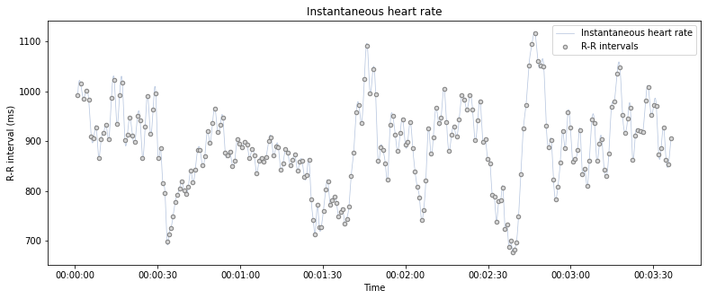
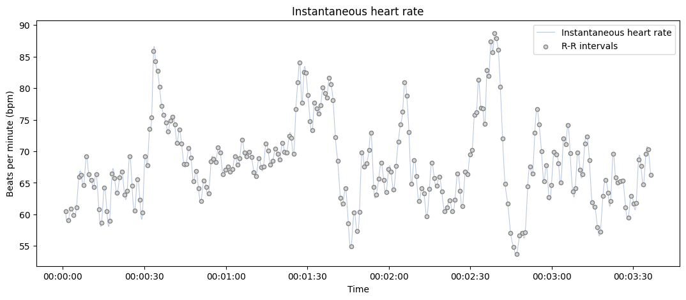
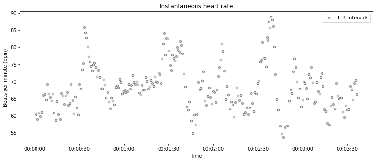
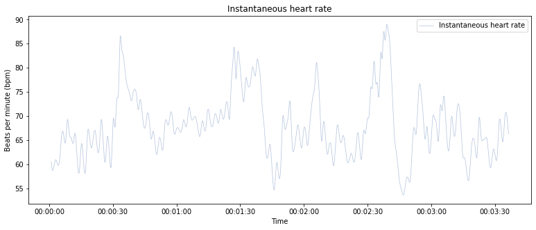

systole.plots.plot_rr#
- systole.plots.plot_rr(rr: Union[List, numpy.ndarray], unit: str = 'rr', kind: str = 'cubic', line: bool = True, points: bool = True, input_type: str = 'peaks', show_artefacts: bool = False, bad_segments: Optional[Union[numpy.ndarray, List[Tuple[int, int]]]] = None, show_limits: bool = True, slider: bool = True, ax: Optional[matplotlib.axes._axes.Axes] = None, figsize: Optional[Union[Tuple[float, float], int]] = None, backend: str = 'matplotlib', events_params: Optional[Dict] = None) matplotlib.axes._axes.Axes[source]#
Plot RR intervals time series.
- Parameters
- rrnp.ndarray | list
Boolean vector of peaks detection, peaks indexs or RR intervals.
- unitstr
The heart rate unit in use. Can be ‘rr’ (R-R intervals, in ms) or ‘bpm’ (beats per minutes). Default is ‘rr’.
- kindstr
The method to use (parameter of scipy.interpolate.interp1d). The possible relevant methods for instantaneous heart rate are ‘cubic’ (defalut), ‘linear’, ‘previous’ and ‘next’.
- linebool
If True, plot the interpolated instantaneous heart rate.
- pointsbool
If True, plot each peaks (R wave or systolic peaks) as separated points
- input_typestr
The type of input vector. Default is “peaks” (a boolean vector where 1 represents the occurrence of R waves or systolic peaks). Can also be “peaks_idx”, the idexs of samples where a peaks is detected, “rr_s” or “rr_ms” for vectors of RR intervals, or interbeat intervals (IBI), expressed in seconds or milliseconds (respectively).
- show_artefactsbool
If True, the function will call py:func:systole.detection.rr_artefacts to detect outliers interval in the time serie and outline them using different colors.
- bad_segmentsnp.ndarray | list | None
Mark some portion of the recording as bad. Grey areas are displayed on the top of the signal to help visualization (this is not correcting or transforming the post-processed signals). If a np.ndarray is provided, it should be a boolean of same length than signal where False indicates a bad segment. If a list is provided, it should be a list of tuples shuch as (start_idx, end_idx) for each bad segment.
Note
The start and end points should be expressed as peaks indexes.
- show_limitsbool
Use shaded areas to represent the range of physiologically impossible R-R intervals. Defaults to True.
- sliderbool
If True, add a slider to zoom in/out in the signal (only working with bokeh backend).
- ax
matplotlib.axes.Axesor None Where to draw the plot. Default is None (create a new figure).
- figsizetuple | int | None
Figure size. Default is (13, 5).
- backendstr
Select plotting backend {“matplotlib”, “bokeh”}. Defaults to “matplotlib”.
- events_paramsdict | None
(Optional) Additional parameters that will be passed to py:func:systole.plots.plot_events and plot the events timing in the backgound.
- Returns
- plot
matplotlib.axes.Axesorbokeh.plotting.figure.Figure The matplotlib axes, or the boken figure containing the plot.
- plot
See also
Examples
from systole import import_rr from systole.plots import plot_rr # Import R-R intervals time series rr = import_rr().rr.values
Using Matplotlib backend.
plot_rr(rr=rr, input_type="rr_ms")
<AxesSubplot:title={'center':'Instantaneous heart rate'}, xlabel='Time', ylabel='R-R interval (ms)'>Change the default unit to beats per minute (BPM).
plot_rr(rr=rr, input_type="rr_ms", unit="bpm")
<AxesSubplot:title={'center':'Instantaneous heart rate'}, xlabel='Time', ylabel='Beats per minute (bpm)'>Only use a scatter plot and add a bad segment.
plot_rr(rr=rr, input_type="rr_ms", unit="bpm", line=False);
Only plot the interpolated instantaneous heart rate variability.
plot_rr(rr=rr, input_type="rr_ms", unit="bpm", points=False);
Using the Bokeh backend.
from bokeh.io import output_notebook from bokeh.plotting import show output_notebook() show( plot_rr(rr=rr, input_type="rr_ms", backend="bokeh") )
Highlight RR artefacts and outliers.
show( plot_rr(rr=rr, input_type="rr_ms", backend="bokeh", show_artefacts=True) )